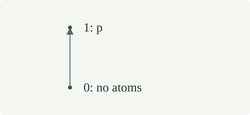
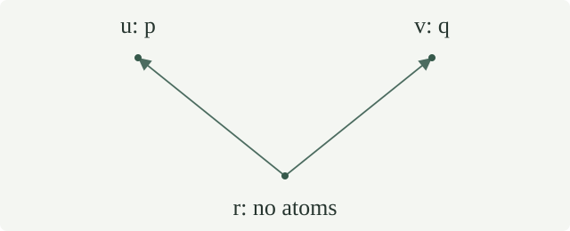

A Kripke frame is a nonempty set \(W\) with a preorder \(\leq\): it is reflexive and transitive. Its elements are worlds, and \(w\leq v\) means that \(v\) is a possible extension of \(w\). Partial orders are permitted, but antisymmetry is not needed for the arguments here.
Fix an atom set \(P\). A persistent atom valuation assigns each world a set \(V(w)\subseteq P\) such that \(w\leq v\) implies \(V(w)\subseteq V(v)\). A Kripke model \(M=(W,\leq,V)\) is a frame with such a valuation. An atom already verified at a world remains verified at every extension; an atom absent from \(V(w)\) may appear later.
For quantified formulas, first-order Kripke models attach a nonempty structure to each world and transport its objects coherently to future worlds.
Use the shared propositional syntax, including its separate negation symbol. The forcing relation \(M,w\Vdash A\), abbreviated \(w\Vdash A\) when the model is fixed, is defined by recursion on \(A\):
All recursive calls concern proper subformulas, so these clauses determine one relation. In particular, the negation clause agrees exactly with the implication clause for \(A\to\bot\). The conjunction and disjunction clauses concern the current world. The implication and negation clauses also concern its extensions, including the current world by reflexivity.
For every model, formula \(A\), and worlds \(w\leq v\), if \(w\Vdash A\), then \(v\Vdash A\).
Induct on \(A\). The atomic case is the valuation condition, and falsum has no forcing world. A forced conjunction has both conjuncts, which persist by induction. For a forced disjunction, its chosen disjunct persists, giving the disjunction at \(v\).
If \(w\Vdash B\to C\), take any \(u\geq v\) forcing \(B\). Transitivity gives \(u\geq w\), so the original implication forces \(C\) at \(u\). This is exactly \(v\Vdash B\to C\). If \(w\Vdash\neg B\), every \(u\geq v\) also extends \(w\) and therefore fails to force \(B\). This proves persistence in the final case.
For every model and formula \(A\), \(w\Vdash\neg A\) implies \(w\nVdash A\), and
The first assertion applies the negation clause to \(w\leq w\). For the displayed equivalence, \(w\Vdash\neg\neg A\) says that no \(v\geq w\) forces \(\neg A\). Such a \(v\) forces \(\neg A\) exactly when every \(u\geq v\) fails to force \(A\). Negating that condition gives the required witness \(u\); conversely such a witness rules out \(v\Vdash\neg A\). This is ordinary classical reasoning about the model, not a new inference rule in its object logic.
Thus failure to force \(A\) at the current world is weaker than forcing \(\neg A\): the latter rules out verification at every extension. The two-world construction below gives an explicit strict example.
Write \(M,w\Vdash\Gamma\) when \(M,w\Vdash B\) for every formula \(B\) in a possibly infinite set \(\Gamma\). The Kripke consequence \(\Gamma\models_{\mathrm K}A\) means that, in every Kripke model and at every world, forcing all of \(\Gamma\) implies forcing \(A\). A formula is Kripke valid when \(\varnothing\models_{\mathrm K}A\).
A pointed countermodel to this consequence is a specified model and world forcing every member of \(\Gamma\) but failing to force \(A\). The world need not be least in the whole frame. Taking only its possible extensions will preserve all the relevant forcing statements.
For numbered-atom formulas and finite premises, validity can be tested using bounded finite partial-order models. The bound comes from the problem’s finite subformula set.
For every premise set \(\Gamma\) and formula \(A\), if \(\Gamma\vdash_{\mathrm I}A\) in intuitionistic natural deduction, then \(\Gamma\models_{\mathrm K}A\).
Induct on the finite derivation, allowing any world of any model. An assumption is forced by the premise condition. Conjunction introduction combines the two forced conjuncts, and either elimination selects one. Disjunction introduction supplies a forced disjunct. For disjunction elimination, the current world forces one disjunct; its corresponding branch induction hypothesis applies with that formula added to the assumptions.
For implication introduction, suppose its branch derives \(B\) from \(\Gamma,A\). At a world \(w\) forcing \(\Gamma\), take \(v\geq w\) forcing \(A\). Persistence makes \(v\) force every member of \(\Gamma\). The branch induction hypothesis gives \(v\Vdash B\), establishing \(w\Vdash A\to B\). Implication elimination applies the implication clause at the current world using reflexivity.
For negation introduction, its branch derives \(\bot\) from \(\Gamma,A\). If a future \(v\geq w\) forced \(A\), persistence and the branch induction hypothesis would force \(\bot\) there, which is impossible. Hence \(w\Vdash\neg A\). Negation elimination cannot have both its premises forced, because the negation clause includes the current world. Falsum elimination has no world forcing its premise. These checks cover every primitive rule.
Consequently a pointed countermodel rules out a derivation with the specified assumptions. No completeness theorem is needed for this direction.
For the language with numbered atoms, the converse is the strong completeness theorem: every failed intuitionistic deduction has a counterexample in one fixed canonical model, even for an infinite premise set.
Let \(M\) have atom set \(Q\), and let \(\sigma:P\to\operatorname{Form}(Q)\) assign a formula to each atom of \(P\). The substitution model \(M_\sigma\) has the same frame and the atom valuation
This is a Kripke model: if \(w\leq v\) and \(p\in V_\sigma(w)\), gives \(M,v\Vdash\sigma(p)\), hence \(p\in V_\sigma(v)\). Write \(A[\sigma]\) for the simultaneous substitution in the actual shared syntax.
For every formula \(A\) over \(P\) and every world \(w\),
Induct on \(A\), simultaneously for every world. At an atom this is the definition of \(V_\sigma\). Falsum is forced on neither side. Conjunction and disjunction follow by applying the induction hypotheses to their two components at \(w\).
For an implication, both sides say that at every \(v\geq w\), forcing the substituted antecedent implies forcing the substituted consequent: use the induction hypotheses for the two components at \(v\). For negation, both sides exclude forcing the substituted subformula at every such \(v\). The frames are literally the same, so the future-world quantifiers have identical domains. This proves the equality of meaning for the specified substitution construction.
For a world \(w\) of \(M\), its generated submodel \(M_{\geq w}\) has world set \(\{v\in W:w\leq v\}\), the inherited preorder, and the restriction of the same atom valuation. This set is nonempty because it contains \(w\), which is now a least world.
The restriction remains persistent: a comparison between its worlds is a comparison in \(M\), where atom forcing already persists. Moreover every extension in \(M\) of a retained world \(v\) is retained, by transitivity from \(w\leq v\).
For every \(v\geq w\) and formula \(A\),
Induct on \(A\). Atomic valuations agree by restriction; falsum, conjunction and disjunction use the same clauses and the induction hypotheses. For implication, every future world of \(v\) in the submodel is an original future world. Conversely an original future \(u\geq v\) satisfies \(w\leq u\), so is a world of the submodel. Apply the component induction hypotheses at each such \(u\). This identifies the two universal conditions exactly. The negation case uses the same correspondence of future worlds.
In particular, every pointed countermodel at \(w\) can be replaced by a countermodel whose frame has \(w\) as a least world, while preserving all assumptions and the failed conclusion there.
Two such rooted models can be joined below a new common world while retaining every formula at every old world. This construction proves the intuitionistic theorem disjunction property.
Let \(b:P\to\{0,1\}\) be a Boolean valuation. Its one-world model \(M_b\) has the sole world \(*\), with its reflexive order, and \(p\in V(*)\) exactly when \(b(p)=1\). Then for every formula \(A\),
The atomic and constant cases are immediate. Conjunction and disjunction use the same two Boolean operations. The only possible future in the implication clause is \(*\) itself, so it says that truth of the antecedent implies truth of the consequent, exactly the Boolean implication table. Likewise negation says that its subformula is false at \(*\). Structural induction completes the proof.
Conversely any model with a sole world defines a Boolean atom valuation by membership in its atom set, and the same induction proves the displayed interpretation. It follows that every Kripke valid formula is a Boolean tautology. The converse will fail in the following two-world model.
Fix an atom \(p\). The two-world model \(C_p\) has worlds \(0\leq1\), with no comparison \(1\leq0\), and valuations \(V(0)=\varnothing\), \(V(1)=\{p\}\). It is persistent because the only strict comparison carries the empty set into \(\{p\}\).

At the lower world of \(C_p\),
Consequently it fails to force both \(p\lor\neg p\) and \(\neg\neg p\to p\).
The lower valuation omits \(p\). Its upper extension forces \(p\), so the lower world cannot force \(\neg p\). Neither world forces \(\neg p\): at world \(1\), its own forcing of \(p\) prevents this. Thus every extension of \(0\) fails to force \(\neg p\), which says \(0\Vdash\neg\neg p\).
The disjunction fails because neither disjunct is forced at \(0\). The implication fails because \(0\) itself is an extension forcing its antecedent \(\neg\neg p\) while failing its consequent \(p\). This also exhibits failure of forcing \(p\) without forcing its negation.
Fix distinct atoms \(p,q\). The fork model \(F_{p,q}\) has worlds \(r,u,v\). Besides reflexivity its only comparisons are \(r\leq u\) and \(r\leq v\); the upper worlds are incomparable. Put \(V(r)=\varnothing\), \(V(u)=\{p\}\), and \(V(v)=\{q\}\). These sets give a persistent valuation, since every strict comparison begins at the empty valuation.

The root of \(F_{p,q}\) forces \(\neg(p\land q)\) but does not force \(\neg p\lor\neg q\). Hence it fails to force
No world forces both atoms. The root forces neither. World \(u\) forces \(p\) but not \(q\), and world \(v\) forces \(q\) but not \(p\), using \(p\ne q\). Therefore no future of the root forces their conjunction, which proves its negation there.
The root does not force \(\neg p\), because \(u\) forces \(p\). It does not force \(\neg q\), because \(v\) forces \(q\). Thus the disjunction of these negations is not forced. The root itself witnesses failure of the displayed implication. This calculation uses every possible future world, not just the atoms currently verified at the root.
For every atom \(p\), neither \(p\lor\neg p\) nor \(\neg\neg p\to p\) is derivable without assumptions by intuitionistic natural deduction. For distinct atoms \(p,q\), the displayed De Morgan implication is not intuitionistically derivable either.
Such a derivation would, by , force its conclusion at every world of every model. The two-world calculations refute the first two conclusions, and the fork calculation refutes the third. Excluded middle and double-negation elimination are true for each of the two Boolean values of an atom. For the De Morgan implication, if the conjunction is false then at least one conjunct is false, making its negation true; if the conjunction is true then the implication has a false antecedent. Thus all three formulas are Boolean tautologies, so by classical completeness they have classical derivations. Boolean valuations alone therefore do not characterize intuitionistic derivability.
The same three formulas have no empty-antecedent derivation in the single-conclusion sequent calculus. Its translation into natural deduction would turn such a sequent proof into an intuitionistic natural-deduction proof, contradicting the conclusions just established.
For distinct atoms \(p,q\), the world \(0\) of \(C_p\) forces neither atom. Does it force \(p\to q\), as the corresponding Boolean truth-table row would suggest?
No. The upper extension \(1\) forces \(p\), but it does not force \(q\), since its valuation is exactly \(\{p\}\) and \(p\ne q\). This future world refutes the universal condition defining \(0\Vdash p\to q\). The current failure to force an antecedent does not determine what can happen at its extensions.